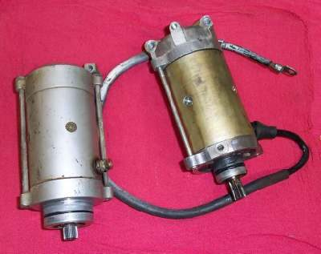
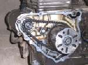
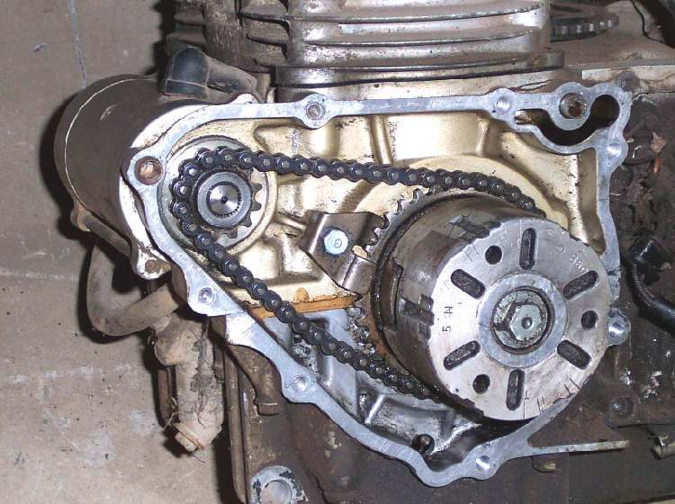
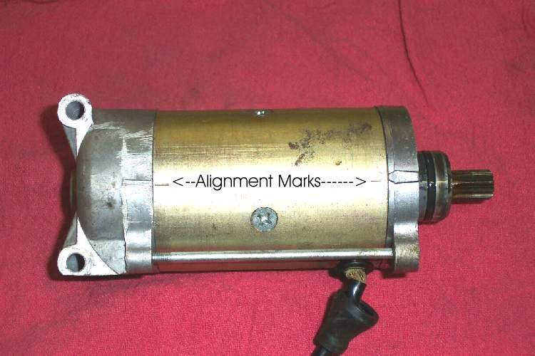
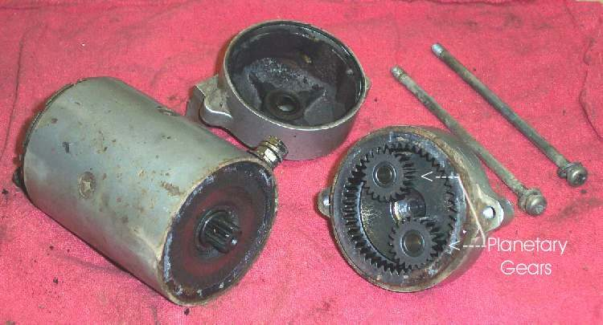
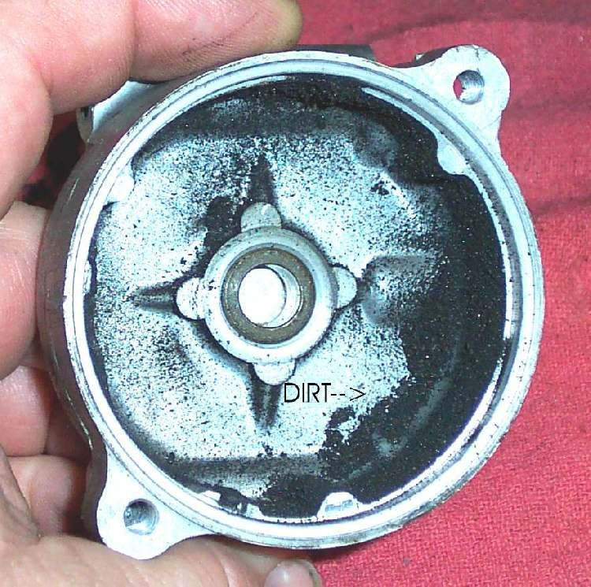

The starter is a strong DC motor, geared down so it can turn the engine over. Most starters are held on by two bolts and sit against the engine case with an O-ring seal. Taking one off is a short job, but the drive type decides how much else must come apart. Remove the starter only after the battery, cables and solenoid have been proved good. See Test the starter circuit.
Safety
- Disconnect the battery earth lead first. The starter cable is live and can draw very high current if it touches metal.
- Tape or tie back the cable so it cannot touch the frame.
- Starter bolts and covers hold oil. Put a tray under the area.
You need
- Spanners or sockets for the starter bolts and the cable nut.
- A marker pen.
- A new O-ring if the old one is flat or cut.
- Your bike's manual, to see if the drive is gears or a chain.
Know your drive
- Gear drive: a train of gears connects the starter to the engine. You can often pull the starter without taking off the side cover.
- Chain drive: a sprocket and chain run inside the side cover. The sprocket falls off the starter when you pull it out, so the cover must come off to refit it.
- Some starters also have planetary gears inside the body.
- The starter is geared down by a large ratio, because the motor is small and fast.
Steps
- Disconnect the battery earth lead. Then undo the starter cable nut and lift the cable off the terminal.
- Check the manual to see whether the drive is a chain. If it is, plan to take off the side cover.
- Remove the two starter bolts. Pull the starter straight out. The O-ring can hold it, so a firm pull may be needed.
- Look for line marks on the body and the two end covers. If you cannot find any, draw your own with a marker so the covers go back the same way round.
- Look inside the opening in the engine. Check the gears or chain for chipped teeth, rust or metal dust.
- Check the starter for oil, water or rust inside, for dirt or carbon dust, and for loose or badly connected wires.
- If the starter is dirty inside, clean it and replace all seals and O-rings. For brush and commutator checks see Check starter brushes, commutator and armature on the bench.
- Fit a new O-ring, lightly smeared with oil. Push the starter home until it sits flush, lining up the gear or sprocket.
- Refit the bolts and the cable. Connect the battery last.
- Press the starter button for a short time. Do not run it for more than a few seconds, and wait a minute between tries.
Check your work
- The engine turns over smoothly with no grinding.
- There is no oil seep at the starter flange.
- The cable end is tight and clean.
If it did not fix the problem
- Noise from the engine side: see Grinding or screeching noise when starting.
- Starter whirs but engine does not turn: see Starter motor whirs but the engine does not turn and Check the starter clutch.
- For a full strip, see Remove and inspect the starter motor.